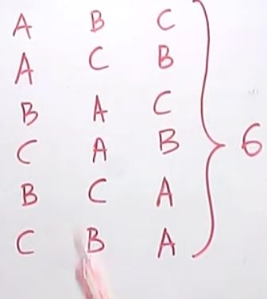

Главная
Математика
Комбинаторика :
Комбинато́рика (комбинаторный анализ) — раздел математики, изучающий дискретные объекты, множества (сочетания, перестановки, размещения и перечисления элементов) и отношения на них (например, частичного порядка).
Комбинаторика связана с другими областями математики — алгеброй, геометрией, теорией вероятностей и применяется в различных областях знаний (например, в генетике, информатике, статистической физике).
Термин «комбинаторика» был введён в математический обиход Лейбницем, который в 1666 году опубликовал свой труд «Рассуждения о комбинаторном искусстве».
Иногда под комбинаторикой понимают более обширный раздел дискретной математики, включающий, в частности, теорию графов.
Разделы:
n - общее кол-во обьектовk - сколько обьектов выбираем
- перестановки - кол-во перестановок (без повторения , уникальные) расчитывается как факториал числа ( n! )
- перестановки c повторениями -
- размещения - n!/(n-k)!
- размещения c повторениями - n^k
- сочетания - n!/k!*(n-k)!
- сочетания c повторениями -
Примеры:
Пример с конвертами и марками .
Всего возможных попыток 5*3=15 .

Число перестановок
Пример с 3-мя ракушками .
Всего возможных попыток 3!=6 (факториал из трёх).

Полезные ссылки:
- Комбинаторика https://math.ru/